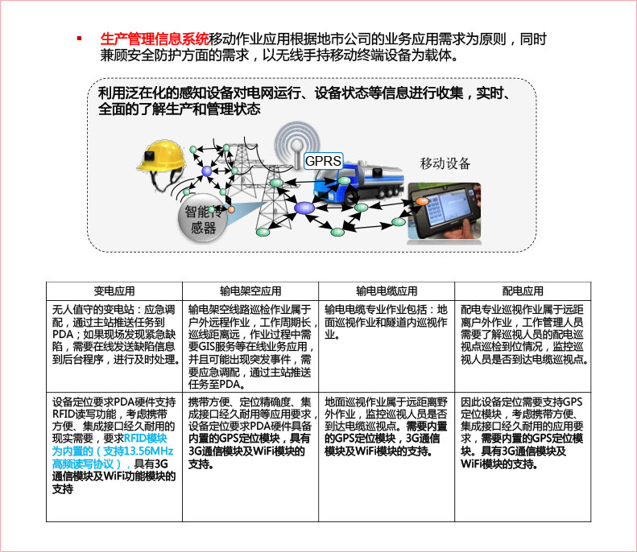
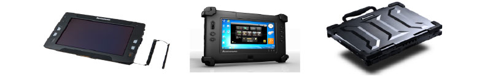

联想工业级加固终端助力电力生产业务系统
- 应用场景：生产管理，信息化作业、巡检监控
- 关键词：高低温、防水、防尘、防跌落，支持GPS定位，支持条形码扫描、电力系统同步对接
电网为什么需要加固计算机
电网应用环境
电力行业应用概况

联想工业级加固终端产品系列
联想工业级加固终端-联想R1000
应用案例：湖南省电力公司生产管理信息系统(PMS)
客户要求及参数指标如下：
- 支持通过线缆、摄像头及人工输入的数据采集方式。--RJ45 前后置摄像头 多点触控屏幕 手写笔
- 操作标准温度：-10℃-50℃。--工作温度：0~50°C 储存温度：-30~ 70°C
- 防尘防水等级达到IP64及以上。--IP65
- 抗冲击能力至少达到1米的自由落体。--跌落高度1.8m
- 支持GPS定位，可执行GIS地图。--支持
- 兼容或支持安全接入软件接入，支持移动作业应用客户端软件。--支持
- 可支持通过国电南瑞的U-key加密启动运行。--支持
解决方案：为客户推荐结合联想昭阳R2000T加固笔记本、R700加固平板电脑、R1000加固平板电脑三种机型的整体硬件解决方案。

联想工业级加固终端
为客户提供户外安全计算平台